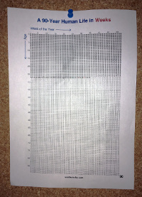

Nejdůležitější papír v mém životě je stránka o velikosti A4, na které se nachází 4680 čtverečků tvořících obdélník. Vždy padesát dva čtverečků na devadesáti řádcích. Nahoře je velký nápis „A 90-Year Human Life in Weeks“. Přibližně třetina z toho papíru je škrtlá.

(Můj depresivní papír pár měsíců zpět.)
Každý týden ve čtvrtek večer, když mi na ten papír padne pohled vezmu fixu a jeden čtvereček škrtnu. Spousta lidí používá kalendáře, kde si šrtá dny, nebo vytrhává celé měsíce. Rozdíl mezi depresivním papírem a kalendářem spočívá v účelu. Depresivní papír není určený k plánování budoucnosti, ani k sledování průběhu času. Jeho účel je prostý; k smrti mě děsit.
Když se na něj dívám, jasně si uvědomuji, že smrt není nějaký abstraktní koncept, který je vzdálený kdesi v budoucnosti. Ne. Je to v lepším případě něco, co mě potká za nějaké tři tisíce čtverečků.
Tři tisíce týdnů, jako byl tenhle týden, a to ještě jen v tom nejoptimističtějíším možném případě. Mnohem pravděpodobněji si na mě počíhá dřív, může se to stát dokonce hned příští čtvereček.
Smrt mě neděsí. Možná protože jsem si uvědomil vlastní smrtelnost už jako malý capart a nějak se s tím srovnal hned od začátku. Nevím. Co mě děsí je myšlenka, že svůj život promrdám, že se ohlédnu zpět a budu litovat.
Mám tisíce todo položek, tisíce myšlenek, které bych chtěl sepsat a implementovat a provést. Tisíce střípků, které mají potenciál trošičku změnit svět. Mám je už dlouho, přesto jsem je celé dlouhé roky odkládal. Až bude čas. Až bude nálada. Až bude něco, co teď není. Teď nemám čas, koukám na seriál, možná příští měsíc..
To se od doby co mám depresivní papír změnilo. Zpočátku jen lehce, každým dnem však víc a víc.
Zábavné je, že zatím nikdo, komu jsem můj depresivní papír fyzicky ukozoval to nepochopil.
„Cože? Ty si škrtáš týdny které ti zbývají do smrti? To je příšerné!“
„Pane bože, nic depresivnějšího jsem nikdy neviděl!“
„Na smrt bys neměl takhle myslet.“
Vážně mě rozesmívá, když někdo takhle tvrdě nepochopí pointu. Ten papír je totiž ta nejlepší věc, která mě kdy v životě potkala.
Depresivní papír mi změnil pohled na média, na špatné knihy a filmy. Na politiky, na negativní lidi, na manipulátory a jejich bullshit problémy, které mi zkouší cpát.
„Cože, vy máte bullshit? Děkuji, nemám zájem a čas. Sedím v rychlíku jménem Život, který mě veze rychlostí jedné sekundy za vteřinu vstříc smrti. Musíte uznat, že pád k zániku rychlostí že z toho vlajou vlasy jaksi přehlušuje vaší agitaci. V tomhle kontextu prostě nemá váhu.“
Nemám čas ztrácet čas blbostma a věcma, které dělat nechci. Nikdo ho nemá, ale hrozně málo lidí si to uvědomuje.
Tenhle papír se mnou jasně mluví. Je to červený vykřičník, připomínka vlastní smrtelnosti a krátkosti lidského života, která říká;
Děláš fakt to, co dělat chceš? Jsi si stoprocentně jistý, že nepromrdáváš svoje čtverečky blbostma? Vážně je vše tak, jak to chceš?
Všechno dobré za poslední rok mám jen díky němu.
To on mě donutil dát výpověď ve staré práci. On mě donutil být upřímnější sám k sobě, ale i ke svému okolí. Donutil mě se víc socializovat. Vypovědět byt a najít si za skoro stejnou cenu třikrát větší na lepším místě.
Díky němu mám lepší práci, lepší bydlení a holku, kterou mám rád. Vždycky, když jsem byl na pochybách, vždycky když jsem měl strach, nebo velkou nechuť něco udělat, vždycky stačilo se podívat na proškrtanou třetinu papíru a uvědomit si, že mi jí nikdo nevrátí. Že je nenávratně pryč a je jen na mě, jak si zařídím zbytek. Že muj život je moc krátký, abych ho vyplýtval na nesmysly.
„Jsem nervózní. Všechno jde strašně rychle, to takhle normálně není. Ty nejsi nervózní?“
Nejsem. Nejsem, protože stále častěji dělám přesně to, co dělat chci a neexistuje nic jiného, co bych dělal radši. Vím to, protože každý den, když jdu kolem a každý týden, když škrtám čtvereček mě depresivní papír nutí myslet na otázku za všechny peníze světa:
Vážně děláš co chceš? Ne? Proč ne? Co tě drží jiného, než ty sám?
{kind=link}